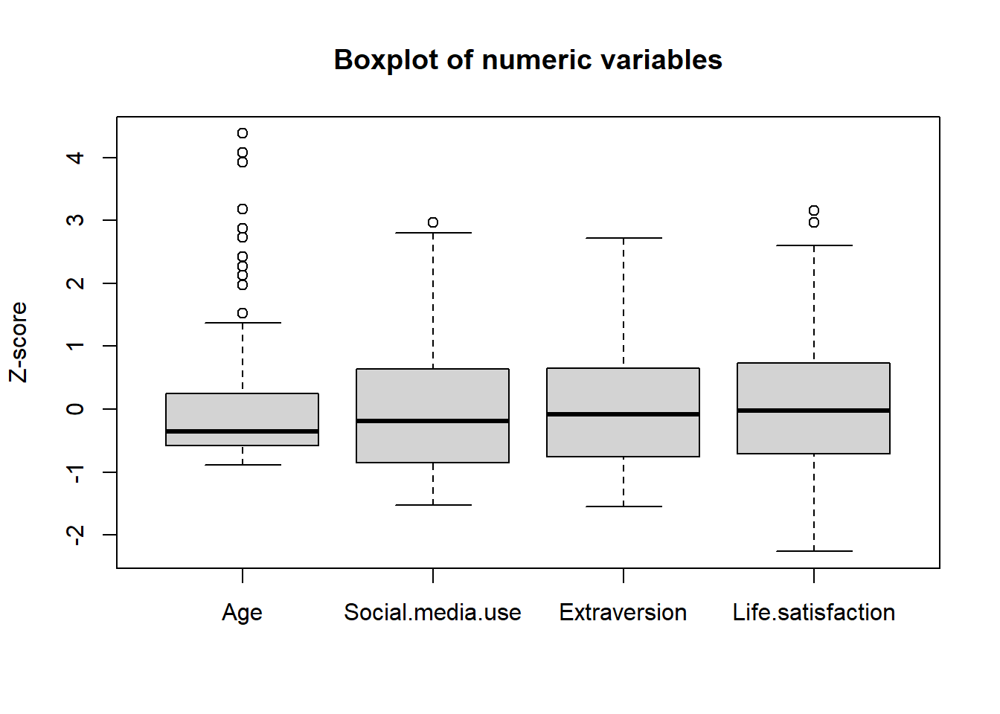
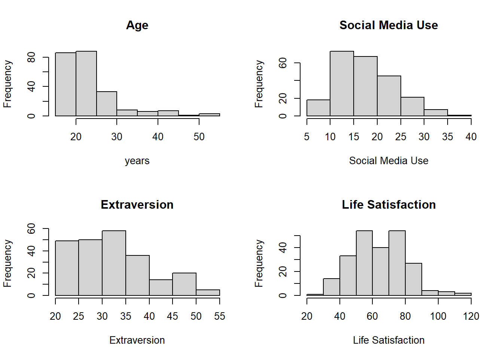
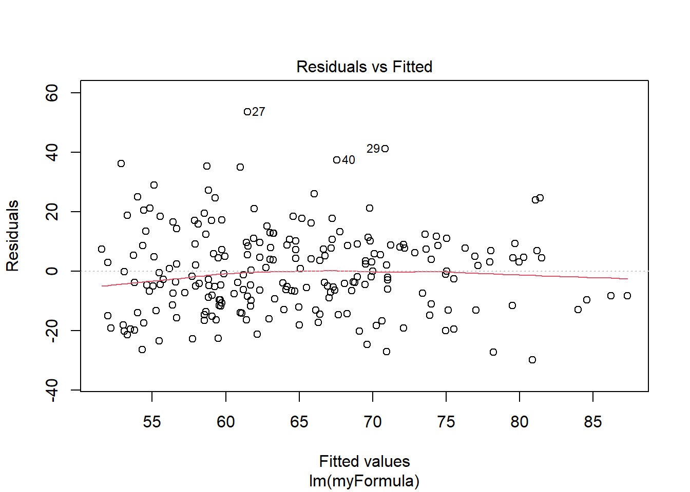

#Load the data
df <- read.csv("SmLifeSatisfactionData.csv")PS71020_Unit4_Homework
Regression 1
Learning Outcomes:
1 - Use RStudio to carry out a simple linear regression (forced-entry)
2 - Learn how to fully report regression results in APA style
3 - Use RStudio to check data for assumptions of linear regression.
4 - Understand the effects of collinearity on predictor results
Materials Used:
We will use the packages effectsize, rstatix, car, psych, ppcor these are already installed on the RStudio Server but if you are working on your own Laptop you may need to install them.
CREATE A NEW PROJECT
Just as we did in previous weeks we are going to start by creating a new project for this week’s lab. Download the data from the VLE (In the Week 4 Homework Materials section) and then copy it in the folder you created your project in. You can also find a direct download link for the data here: Github Link.
If you are working on the RStudio Server, then you will need to download the file to your computer and then upload it to the correct folder on the server.
Also create a new script in this folder so you can copy the lines of code needed to run this analysis yourself using just that script.
SECTION A. THE DATASET
A research team were interested in the extent to which life satisfaction was related to the personality trait of extraversion and one’s level of social media use. They had three questionnaire measures of these constructs, with high scores on each measure indicating higher scores on the construct. They also recorded the age and gender of each participant. The team managed to collect data at one time-point from 237 participants in total. Gender was coded as:
1 - Male
2 - Female
3 - Other
4 - Prefer Not To Say
Load the data and check the data carefully to see if it meets the assumptions for carrying out a multiple regression. Are there any concerns, and what might you do to address any of these concerns?
The sample size in this dataset is well above the rule of thumb requirements mentioned in the lecture ie N > 104 + k. The DV and IVs are all continuous variables; we don’t have the information in the dataset to examine their reliability, but they are widely used constructs, so likely fine.
#Load required packages
library(psych) #for describe
library(rstatix) #for cor functions
Attaching package: 'rstatix'The following object is masked from 'package:stats':
filterlibrary(car) #for VIFLoading required package: carData
Attaching package: 'car'The following object is masked from 'package:psych':
logitlibrary(ppcor) #for sr2Loading required package: MASS
Attaching package: 'MASS'The following object is masked from 'package:rstatix':
selectlibrary(effectsize)
Attaching package: 'effectsize'The following objects are masked from 'package:rstatix':
cohens_d, eta_squared, omega_squaredThe following object is masked from 'package:psych':
phi#recode the Gender variable as a factor
df$Gender <- factor(df$Gender, levels = c(1:4), labels = c("Male","Female","Other","Prefer not to say"))
#check the summary
summary(df) Gender Age Social.media.use Extraversion
Male : 72 Min. :18.00 Min. : 9.00 Min. :20.00
Female :161 1st Qu.:20.00 1st Qu.:13.00 1st Qu.:26.00
Other : 3 Median :21.50 Median :17.00 Median :32.00
Prefer not to say: 1 Mean :23.87 Mean :18.08 Mean :32.59
3rd Qu.:25.25 3rd Qu.:22.00 3rd Qu.:38.00
Max. :53.00 Max. :36.00 Max. :55.00
NAs :5
Life.satisfaction
Min. : 28.00
1st Qu.: 53.00
Median : 64.00
Mean : 64.25
3rd Qu.: 76.00
Max. :115.00
#as Age includes 5 NAs so remove these cases
dfClean <- subset(df,complete.cases(df))#apply shapiro-wilk to only the numeric variables
sapply(dfClean[,2:5],shapiro.test) Age Social.media.use
statistic 0.7213025 0.957855
p.value 1.924746e-19 2.528376e-06
method "Shapiro-Wilk normality test" "Shapiro-Wilk normality test"
data.name "X[[i]]" "X[[i]]"
Extraversion Life.satisfaction
statistic 0.9555223 0.9869881
p.value 1.384193e-06 0.03301944
method "Shapiro-Wilk normality test" "Shapiro-Wilk normality test"
data.name "X[[i]]" "X[[i]]" #get descriptive statistics including skewness and kurtosis
describe(dfClean) vars n mean sd median trimmed mad min max range skew
Gender* 1 232 1.71 0.48 2.0 1.75 0.00 1 3 2 -0.57
Age 2 232 23.87 6.65 21.5 22.43 3.71 18 53 35 2.25
Social.media.use 3 232 18.15 6.02 17.0 17.69 5.93 9 36 27 0.61
Extraversion 4 232 32.69 8.22 32.0 32.07 8.90 20 55 35 0.56
Life.satisfaction 5 232 64.29 16.06 64.0 64.15 17.05 28 115 87 0.22
kurtosis se
Gender* -0.82 0.03
Age 5.19 0.44
Social.media.use -0.26 0.40
Extraversion -0.44 0.54
Life.satisfaction -0.09 1.05If we examine the distributions of the three key variables and check these for outliers, we can see the skewness and kurtosis values are largely fine. The Shapiro-Wilk test is significant in all cases, but given the sample size, we might be best to focus on the histograms and boxplots.
boxplot(scale(dfClean[,2:5]), main = "Boxplot of numeric variables", ylab = "Z-score")
par(mfrow = c(2, 2)) # 2 rows, 2 columns of plots
hist(dfClean$Age, main = "Age", xlab = "years")
hist(dfClean$Social.media.use, main = "Social Media Use", xlab = "Social Media Use")
hist(dfClean$Extraversion, main = "Extraversion", xlab = "Extraversion")
hist(dfClean$Life.satisfaction, main = "Life Satisfaction", xlab = "Life Satisfaction")
There is some positive skew in all three main variables, and a few outliers of potential concern for life satisfaction, but they are largely fine. The variable age does have more substantive positive skew. You could remove all participants above the age of 42 from the dataset and this brings the skewness down below 2. This removal of participants is arguably justified given the large sample size.
#trim the higher age range
dfTrim <- subset(dfClean,dfClean$Age <= 42)
#get descriptive statistics including skewness and kurtosis
describe(dfTrim) vars n mean sd median trimmed mad min max range skew
Gender* 1 222 1.71 0.48 2 1.75 0.00 1 3 2 -0.56
Age 2 222 22.84 4.57 21 22.04 2.97 18 42 24 1.82
Social.media.use 3 222 18.23 6.02 17 17.78 5.93 9 36 27 0.60
Extraversion 4 222 32.91 8.26 32 32.32 8.90 20 55 35 0.53
Life.satisfaction 5 222 64.57 16.16 65 64.47 17.79 28 115 87 0.20
kurtosis se
Gender* -0.81 0.03
Age 3.57 0.31
Social.media.use -0.25 0.40
Extraversion -0.48 0.55
Life.satisfaction -0.09 1.08Examining the bivariate correlations suggests there are no issues with multicollinearity.
cor_gather(pull_lower_triangle(cor_mat(dfTrim[,2:5]))) var1 var2 cor p
1 Social.media.use Age -0.012 8.633806e-01
2 Extraversion Age 0.010 8.805786e-01
3 Life.satisfaction Age 0.110 1.062888e-01
4 Extraversion Social.media.use 0.670 4.081555e-30
5 Life.satisfaction Social.media.use 0.490 1.311370e-14
6 Life.satisfaction Extraversion 0.390 2.818486e-09If we run an initial regression analysis, we can see the VIF and tolerance values indicate no issues with multicollinearity using the rules of thumb from the lecture.
The plots of the residuals largely look fine.
#define the formula
myFormula <- Life.satisfaction ~ Social.media.use + Extraversion
#fit the model
mdl <- lm(myFormula, dfTrim)
#get summary
summary(mdl)
Call:
lm(formula = myFormula, data = dfTrim)
Residuals:
Min 1Q Median 3Q Max
-29.865 -9.704 -1.093 8.608 53.530
Coefficients:
Estimate Std. Error t value Pr(>|t|)
(Intercept) 37.3022 3.9279 9.497 < 2e-16 ***
Social.media.use 1.1124 0.2122 5.241 3.75e-07 ***
Extraversion 0.2123 0.1546 1.373 0.171
---
Signif. codes: 0 '***' 0.001 '**' 0.01 '*' 0.05 '.' 0.1 ' ' 1
Residual standard error: 14.12 on 219 degrees of freedom
Multiple R-squared: 0.2435, Adjusted R-squared: 0.2366
F-statistic: 35.24 on 2 and 219 DF, p-value: 5.392e-14#residuals diagnostic plot
plot(mdl, which = 1)
#VIF and tolerance
vif_vals <- vif(mdl)
vif_valsSocial.media.use Extraversion
1.808003 1.808003 tol_vals <- 1/vif_vals
tol_valsSocial.media.use Extraversion
0.5530963 0.5530963 Examine the bivariate correlation matrix for extraversion, social media use, and life satisfaction. What does it suggest?
#correlation matrix as a table (repeated from above but without Age)
cor_gather(pull_lower_triangle(cor_mat(dfTrim[,3:5]))) var1 var2 cor p
1 Extraversion Social.media.use 0.67 4.081555e-30
2 Life.satisfaction Social.media.use 0.49 1.311370e-14
3 Life.satisfaction Extraversion 0.39 2.818486e-09The bivariate correlation matrix suggests that all three variables have medium to large positive correlations with each other.
Run a multiple regression analysis with life satisfaction as the outcome variable, and extraversion and social media use as the two predictors. What do your results suggest? You might also like to calculate the semi-partial correlations and examine the extent to which the predictors account for individual and shared variance in life satisfaction.
#regression repeated from above
#define the formula
myFormula <- Life.satisfaction ~ Social.media.use + Extraversion
#fit the model
mdl <- lm(myFormula, dfTrim)
#get summary
summary(mdl)
Call:
lm(formula = myFormula, data = dfTrim)
Residuals:
Min 1Q Median 3Q Max
-29.865 -9.704 -1.093 8.608 53.530
Coefficients:
Estimate Std. Error t value Pr(>|t|)
(Intercept) 37.3022 3.9279 9.497 < 2e-16 ***
Social.media.use 1.1124 0.2122 5.241 3.75e-07 ***
Extraversion 0.2123 0.1546 1.373 0.171
---
Signif. codes: 0 '***' 0.001 '**' 0.01 '*' 0.05 '.' 0.1 ' ' 1
Residual standard error: 14.12 on 219 degrees of freedom
Multiple R-squared: 0.2435, Adjusted R-squared: 0.2366
F-statistic: 35.24 on 2 and 219 DF, p-value: 5.392e-14#get standardised betas (making sure to use the right package)
effectsize::standardize_parameters(mdl)# Standardization method: refit
Parameter | Std. Coef. | 95% CI
---------------------------------------------
(Intercept) | -2.41e-16 | [-0.12, 0.12]
Social media use | 0.41 | [ 0.26, 0.57]
Extraversion | 0.11 | [-0.05, 0.26]#get the squared semi-partial correlations of predictors to the DV
spcor(dfTrim[,3:5])$estimate["Life.satisfaction", ]^2 Social.media.use Extraversion Life.satisfaction
0.094894433 0.006516801 1.000000000 Here would be a standard APA format write-up:
A multiple linear regression was conducted to predict life satisfaction from social media use and extraversion. The overall model was significant, F(2, 219) = 35.24, p < .001, and explained 24% of the variance in life satisfaction (R2 = .24, adjusted R2 = .24). Social media use was a significant positive predictor, b = 1.11, \(\beta\) = .41, SE = 0.21, t(218) = 5.23, p < .001, sr2 = .09. Holding extraversion constant, each one-unit increase in social media use was associated with a 1.11-point increase in life satisfaction, and social media use uniquely accounted for approximately 9% of the variance in life satisfaction. Extraversion was not a significant predictor, b = 0.21, \(\beta\) = .11, SE = 0.16, t(218) = 1.38, p = .171, sr2 = .01, uniquely accounting for less than 1% of the variance.
A further note is that: Social media use and extraversion are both positively related to life satisfaction (see correlations), but only social media use is a significant predictor ie \(\beta\) = 0.41 when both are included in the regression model. The semi-partial correlation coefficients suggest extraversion is making virtually no individual contribution to the prediction of life satisfaction, while social media use is making an individual contribution of around 9% to the prediction of life satisfaction. This leaves 14% (total R2 of 0.24 - (0.09+0.01) = 0.14) of the variance in life satisfaction accounted for by the shared contribution of the two predictors. This highlights the difficulties with interpreting individual regression coefficients when the predictors are highly correlated with each other ie extraversion and social media use have a correlation of 0.67. Even though this is not high enough to suggest a problematic level of collinearity it is still something to be aware of when interpreting results and highlights why sr2 values are useful in interpretation.
A note on presenting larger numbers of predictors: If you have more than 2 predictors it often makes more sense to report these in a table with all of the relevant statistics. You should still interpret the results (including direction of effects) in the text but this can reduce the need for huge amounts of numbers in the text.
The research team decided to also add age to the regression model as a control variable. What happens when you do this?
mdl2 <- lm(Life.satisfaction ~ Social.media.use + Extraversion + Age, dfTrim)
summary(mdl2)
Call:
lm(formula = Life.satisfaction ~ Social.media.use + Extraversion +
Age, data = dfTrim)
Residuals:
Min 1Q Median 3Q Max
-27.952 -10.519 -1.090 7.896 50.684
Coefficients:
Estimate Std. Error t value Pr(>|t|)
(Intercept) 28.2728 6.1029 4.633 6.21e-06 ***
Social.media.use 1.1224 0.2110 5.319 2.58e-07 ***
Extraversion 0.2052 0.1537 1.335 0.1832
Age 0.3976 0.2066 1.925 0.0555 .
---
Signif. codes: 0 '***' 0.001 '**' 0.01 '*' 0.05 '.' 0.1 ' ' 1
Residual standard error: 14.03 on 218 degrees of freedom
Multiple R-squared: 0.2561, Adjusted R-squared: 0.2459
F-statistic: 25.02 on 3 and 218 DF, p-value: 5.985e-14If you remove the older age participants (as was done for dfTrim here), age becomes a marginally significant predictor of life satisfaction, with age weakly positively correlated with life satisfaction, but there are no substantive changes with extraversion and social media use as predictors in the model.
One team member was heard to remark that the results showed these predictor variables cause changes in life satisfaction. Why would we remain cautious about that kind of claim for this data?
We should be very cautious making these claims, given the nature of the variables and the research design used in this study. Although we often use words like ‘predictors’ and ‘outcomes’ when using regression models, in reality, complex variables like these will likely have reciprocal relationships with each other across time. The design here used just one time point for the data collection; we would need to use an alternative research design to allow us to make stronger causal claims ie a longitudinal study, or a randomised control study etc.
In other words correlation != causation